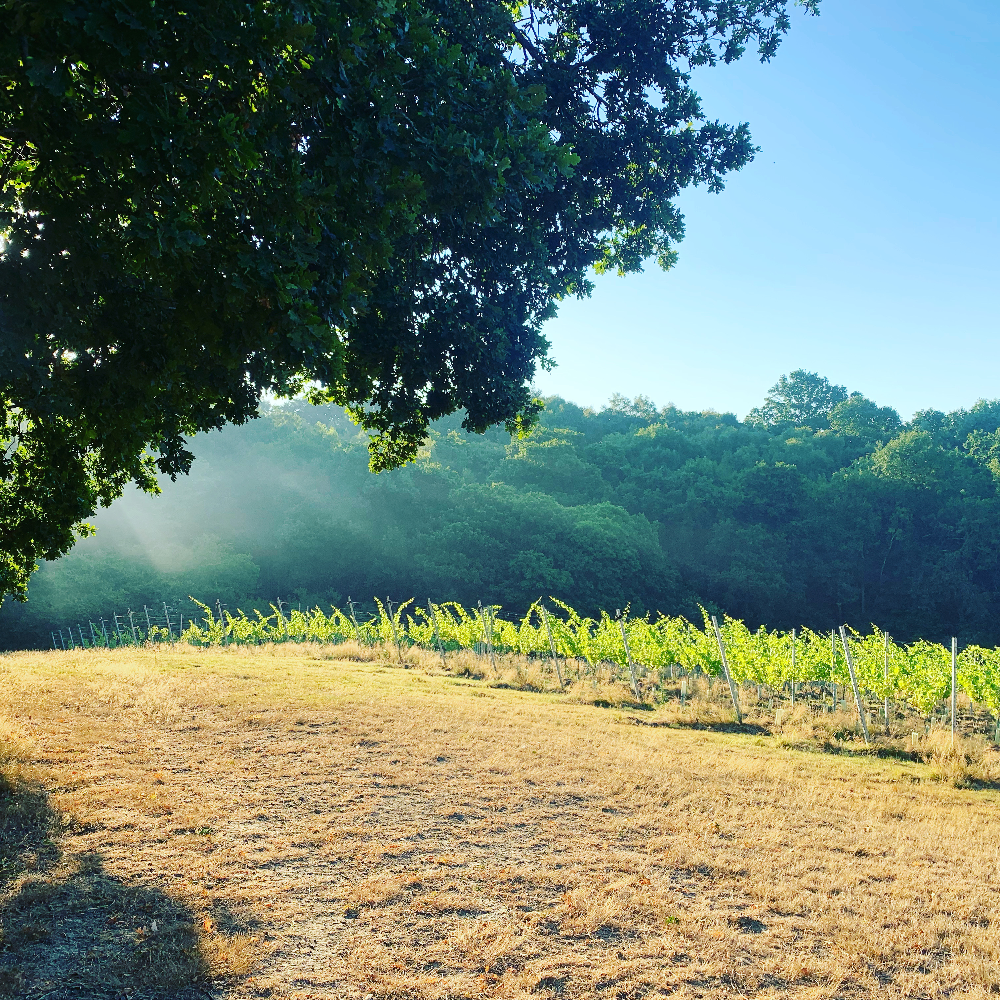

Thirty-plus vineyards. Endless experiences. One extraordinary destination. A lifetime of memories.
The Kentish Wine Way is your invitation to discover the UK's most exciting and diverse wine destination.
Bringing together 30 vineyards open to the public, of all scales and sizes, each offering its own cellar door and unique visitor experience, The Kentish Wine Way celebrates the very best of Kent's thriving wine scene. From internationally acclaimed estates and boutique family-run vineyards to hidden gems waiting to be discovered, every stop offers something different, ensuring no two visits are ever the same.
Two vineyards in a day. Three if you take your time. Four across a weekend. Whether you're planning a day trip, a long weekend or an extended stay, there's so much to see and experience
across the county’s unforgettable vineyards and wines. Every vineyard has its own character, its own story and its own unique, immersive experience to enjoy. A day out here rewards a bit of planning, and the planning is half the pleasure.
Indulge in Michelin-starred food and wine pairings overlooking stunning vistas, enjoy a relaxed lunch with a glass of award-winning Kentish wine and local produce from around the county, or discover intimate tastings hosted by the winemakers themselves.
The experiences extend far beyond the cellar door. Enjoy opera amongst the vines, summer festivals
and live music events, pizza evenings and sunset suppers, flower arranging workshops, vineyard
tours, ballet performances, yoga sessions, wellbeing retreats and so much more, all set within some
of the most beautiful landscapes in Britain.
As England's largest and most awarded wine region, Kent has around 120 commercial vineyards and
more than 1,300 hectares under vine. The county's producers have won more national and
international wine awards than any other county in England, earning a reputation for quality that
increasingly rivals some of the world's most well-known and celebrated wine regions.
Blessed with some of the longest sunshine hours in the country, Kent's vineyards are set amongst
rolling hills, ancient orchards and picturesque villages, offering breathtaking views across the
county's chocolate-box landscapes. From sun-drenched vineyard terraces to sweeping countryside
vistas, this is scenery worth the journey on its own.
Perfectly connected by high-speed rail, visitors can travel from London mainline stations to the
heart of Kent in under an hour, making world-class wine experiences easily accessible for a
spontaneous day trip, a memorable weekend escape or a longer, leisurely stay.
The Kentish Wine Way is much more than a collection of vineyards; it is a distinctive and unique
journey through one of the most beautiful and exciting wine tourism destinations in the world where
you will discover people, places and wines that all tell one unforgettable Kentish story.